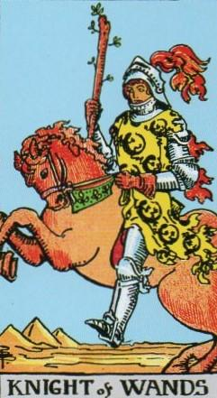
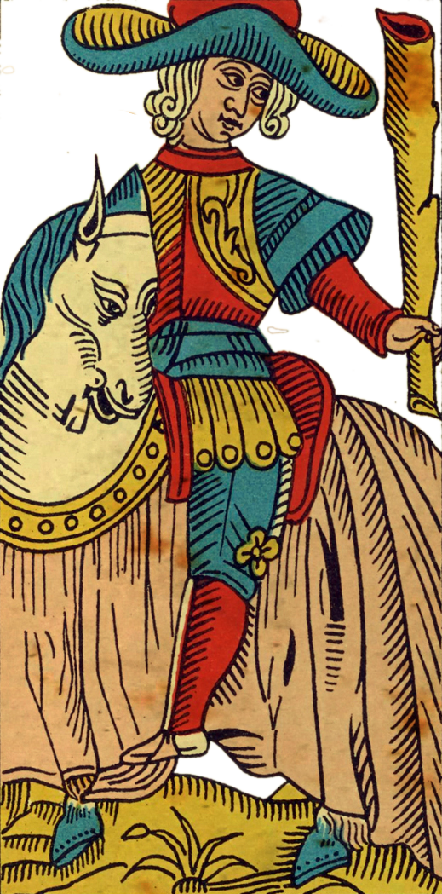
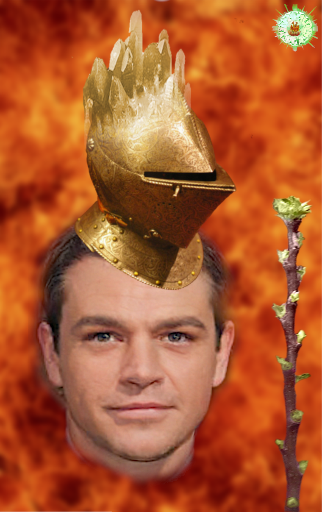
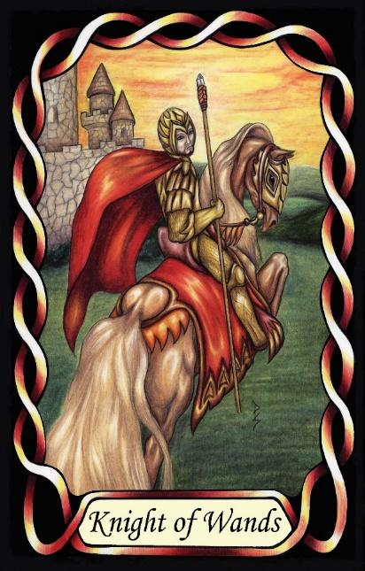

Knight of Wands
The Inspector (ISTJ – SiTe)




Knight |
Concrete Utilitarian |
||
Action |
|||
Introverted Sensing Extroverted Thinking, |
|||
11.6% of population |
|||
Example: Sean Connery, Matt Damon |
|||
Meaning of Life: Orderly life |
|||
Astrology: Leo |
|||
Knights of Wands are disciplined, methodical executors who bring structure to the realm of action. As ST Knights, they are grounded, practical, and focused on tangible results. Their introverted sensing gives them a precise internal standard for how things should be done, and they constantly compare the world against this inner measure of correctness. Order, consistency, and reliability are not preferences for them — they are necessities.
Their extroverted thinking reinforces this by organising their actions into efficient routines and clear procedures. They excel at following established methods, maintaining discipline, and ensuring that every step is completed properly. They are not improvisers or risk-takers; they are the ones who make sure the plan is executed exactly as intended.
Placed in the Fire suit of Wands, their natural discipline becomes directed toward purposeful action. They are the steady flame — controlled, focused, and enduring. Where other Wands types may be driven by inspiration or vision, the Knight of Wands is driven by implementation. They take the abstract intentions of the suit and turn them into concrete, repeatable actions.
They are dependable, loyal, and unwavering once committed. Their strength lies in their ability to maintain order in dynamic situations, bringing stability to projects that require sustained effort. They enforce standards, uphold routines, and ensure that nothing slips through the cracks.
At their core, they seek an orderly life. Their meaning is found in fulfilling obligations, maintaining structure, and creating a world where things function as they should. They are the Inspectors of the Wands suit — steady, reliable, and dedicated to the disciplined execution of purposeful action.